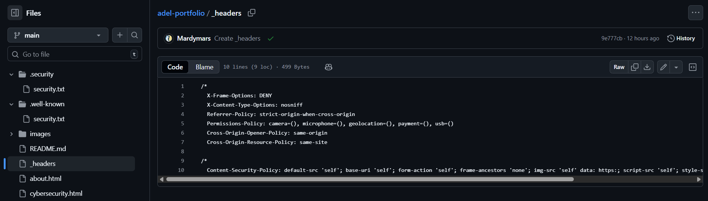
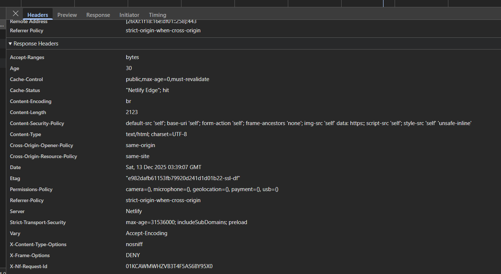

I investigate Windows activity, validate detection rules, and analyze network traffic.
My work connects technical findings with clear documentation and evidence you can review.
Explore independent Windows labs alongside security configuration and verification on this portfolio.
COMPLETED LAB ARTIFACTS / OCTOBER 2026
Follow the evidence.
Findings, source records, and repeatable procedures from two controlled Windows lab projects.
DETECTION VALIDATION
Windows Detection Validation Lab
Built a Windows VM with Sysmon, generated harmless account-discovery and scheduled-task activity, and evaluated three existing Sigma rules against the captured process events.
Rules tested
3
Process events
6
Expected checks
9 / 9
Collected event fields through Event Viewer and PowerShell, then exported structured evidence.
Compared matching commands with related control activity and documented why a match still needs investigation.
Published sanitized events, rule provenance, findings, and automated replay checks.
Scope: controlled process activity and existing rules. The results establish expected behavior for these test cases.
PACKET ANALYSIS / TLS
HTTPS Traffic Investigation Lab
Ran a local HTTPS service and investigated a successful connection, certificate rejection, and browser-assisted TLS decryption. Correlated Wireshark observations with Caddy access logs.
Investigations
3
Server port
443
Reviewed packets
72
Identified the TCP handshake, TLS 1.3 selection, and a client reset following Firefox's certificate error.
Used my own lab browser's session secrets to reveal an HTTP/2 request, 200 response, and exact response body.
Published three reviewed captures, frame maps, matching logs, and evidence-integrity checks.
Scope: local traffic inside my VM. Public captures exclude session secrets and unrelated connections; the exact certificate-chain failure remains undiagnosed.
What I Apply
Least-privilege access and defense-in-depth principles
Threat awareness, including XSS, clickjacking, and configuration-driven risks
Secure static-site deployment using GitHub + Netlify
Security headers: implement, verify, and maintain
Clear troubleshooting, documentation, and change tracking
Windows event log analysis and evidence-based detection validation
TCP/IP troubleshooting, packet analysis, and certificate investigation
Artifacts
These artifacts show both configuration and verification, ensuring controls are not only defined but actively enforced.
I implemented baseline hardening headers and a Content Security Policy (CSP) to reduce common web risks such as
clickjacking, MIME sniffing, excessive browser permissions, and script injection exposure.

Configuration proof: headers and CSP defined in Netlify _headers.
Clickjacking mitigation through frame restrictions
MIME-type sniffing protection
Permissions-Policy hardening
COOP and CORP controls to reduce cross-origin exposure
After deployment, I validated the live HTTPS response in DevTools to confirm the intended headers were
actually being served in production and not just present in source.

Validation proof: headers observed in the live production response.
Confirms HTTPS enforcement and HSTS in production
Confirms CSP is delivered by the platform
Confirms frame protections and permissions hardening
I executed a baseline vulnerability scan of a Windows 11 host using Nessus Essentials, reviewed identified findings,
and documented remediation steps and validation outcomes.